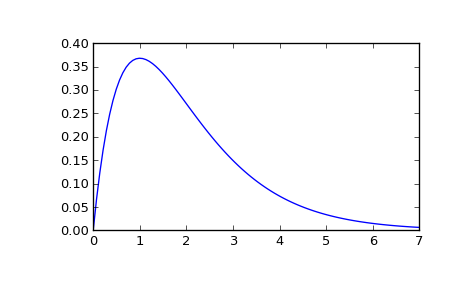

scipy.signal.impulse2¶
- scipy.signal.impulse2(system, X0=None, T=None, N=None, **kwargs)[source]¶
Impulse response of a single-input, continuous-time linear system.
Parameters : system : an instance of the LTI class or a tuple of array_like
describing the system. The following gives the number of elements in the tuple and the interpretation:
- 2 (num, den)
- 3 (zeros, poles, gain)
- 4 (A, B, C, D)
X0 : 1-D array_like, optional
The initial condition of the state vector. Default: 0 (the zero vector).
T : 1-D array_like, optional
The time steps at which the input is defined and at which the output is desired. If T is not given, the function will generate a set of time samples automatically.
N : int, optional
Number of time points to compute. Default: 100.
kwargs : various types
Additional keyword arguments are passed on to the function scipy.signal.lsim2, which in turn passes them on to scipy.integrate.odeint; see the latter’s documentation for information about these arguments.
Returns : T : ndarray
The time values for the output.
yout : ndarray
The output response of the system.
Notes
The solution is generated by calling scipy.signal.lsim2, which uses the differential equation solver scipy.integrate.odeint.
New in version 0.8.0.
Examples
Second order system with a repeated root: x’‘(t) + 2*x(t) + x(t) = u(t)
>>> from scipy import signal >>> system = ([1.0], [1.0, 2.0, 1.0]) >>> t, y = signal.impulse2(system) >>> import matplotlib.pyplot as plt >>> plt.plot(t, y)
